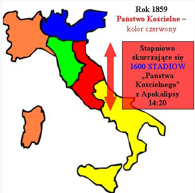
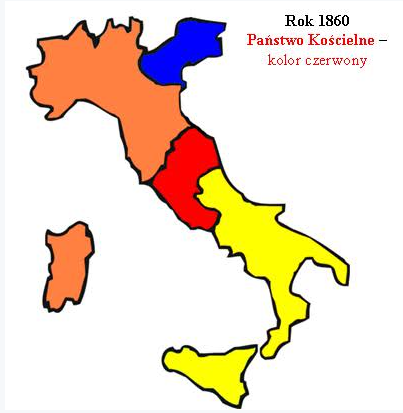
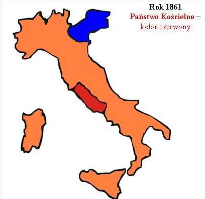
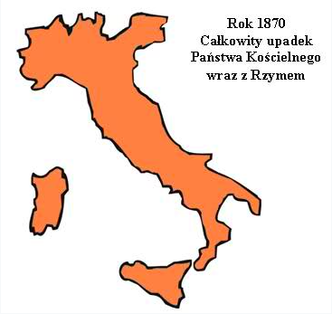
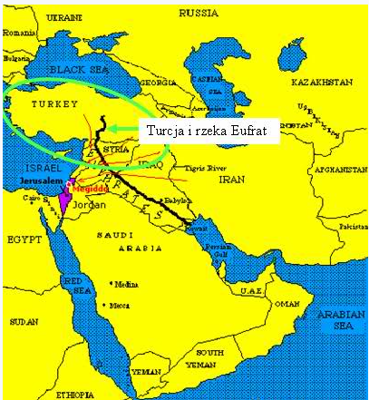
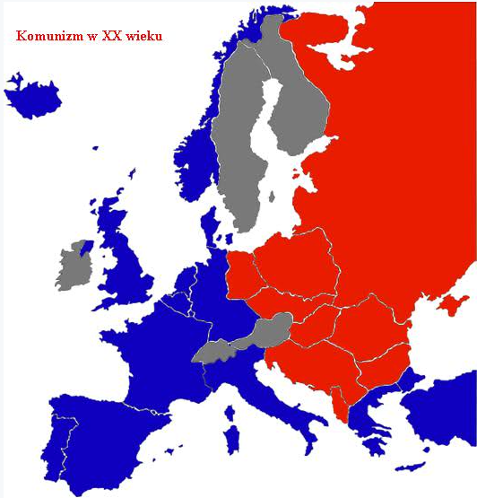
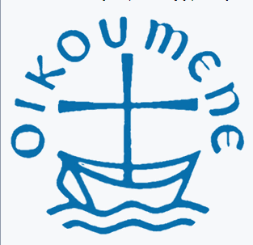

Rozdział 16 (cz. 2)
CZĘŚĆ 2, ciąg dalszy Rozdziału 16
Dzięki ingerencji Boga otworzyły się wielkie możliwości poznania, rozumienia i zwiastowania Ewangelii, w odróżnieniu od okresu wcześniejszego, przed XIX wiekiem, kiedy oficjalny kościół rzymski siłą tłumił wszelką myśl o niezależnych studiach biblijnych.
„I byli ludzie popaleni wielkim żarem, i bluźnili imieniu Boga, który ma moc nad tymi plagami, a nie upamiętali się, by mu oddać chwałę.” (16:8).
Słudzy papiestwa i kościół rzymskokatolicki nie opamiętał się, ogłosił natomiast, że „wielcy arcykapłani - papieże w poprzednich wiekach nie popełnili żadnych błędów”.
Mało tego:
- W 1852 roku wprowadzono nabożeństwo majowe do N.M.P., czyli demonicznej „Królowej Niebios”.
- Pius IX w 1854 roku, ogłosił dogmat o Niepokalanym Poczęciu Marii Panny (wbrew Bogu stwierdza, że Maria była bez grzechu, choć Słowo Boże mówi jasno, że tylko Jehoszua był bez grzechu, tym samym głosi, że Bóg skłamał w Swym Słowie).
- Piusa IX w 1854 roku stwierdza i ogłasza, że jedynym zbawiającym kościołem jest kościół katolicki.
- Sobór Watykański I pod przewodnictwem Piusa IX potępił wolność wyboru religii, prasy, odkryć naukowych - niezatwierdzonych przez kościół katolicki.
Potwierdził także teorię o władzy papieża nad władzami świeckimi w roku 1864.
Jest jeszcze pewna ciekawostka dotycząca tamtego okresu (czwarta czasza) o zupełnie innym - literalnym podłożu, mianowicie druga połowa XIX wieku według wielu doniesień historycznych – to lata wielkich anomalii oraz klęsk żywiołowych, które dotykały całą Europę.
„Rok 1847 to czas ogromnego głodu. Liczne klęski żywiołowe, jakie miały miejsce w tym okresie najbardziej dotknęły mieszkańców wsi, którzy w bezpośredni sposób byli uzależnieni od kaprysów aury. Nadmierne upały, czy ulewne deszcze niszczyły cały wysiłek chłopów”(Świat w wieku XIX).
Piąta czasza.
„A piąty wylał czaszę swoją na tron zwierzęcia; i pogrążyło się królestwo jego w ciemnościach, i gryźli ludzie z bólu swoje języki". (16:10).
Drugą istotną przemianą w Europie pozostałą po Wiośnie Ludów, mającą bezpośredni i istotny wpływ na sytuację Państwa Kościelnego było utrzymanie się liberalnej konstytucji w Piemoncie (północno-zachodnie Włochy), gdzie w 1849 roku władzę objął Wiktor Emanuel II, jedyny władcy włoski, który nie wyciągnął konsekwencji wobec rewolucjonistów, co więcej udzielił schronienia ich towarzyszom z całej Italii. Rozpoczęła się przebudowa Piemontu według zasad liberalnych, powielająca rozwiązania ustrojowe rewolucji francuskiej i posuwająca się do antyklerykalizmu.
Od Wiosny Ludów drugim pierwszorzędnym państwem włoskim dążącym do zjednoczenia Italii był właśnie liberalny Piemont.
Rozpoczęła się rywalizacji dwóch modeli państwowości: liberalnej i katolickiej, kierujących się przeciwstawnymi sobie postulatami.
Walka nie rozpoczęła się od razu, rząd turyński próbował skłonić kurię do ustępstw i przystania na zmianę statusu kościoła, jednakże Rzym odpowiadał potępieniem prowadzonej przez Piemontczyków laicyzacji. Wydarzenia w Europie stworzyły warunki do ekspansji tylko dla jednej ze stron tego konfliktu.
W kwietniu 1860 na Sycylii i w Genui rozpoczął się ruch powstańczy, który popierał powstanie i wyprawę zbrojną.
Giuseppe Garibaldi 6 maja na dwóch statkach wypłynął z Genui z „tysiącem czerwonych koszul”. Po pięciu dniach wylądował w Marsali na Sycylii, gdzie w imieniu Wiktora Emanuela II mianował się dyktatorem. Do jego oddziałów zgłaszali się ochotniczo liczni powstańcy.
Do końca maja po kilku zwycięstwach Garibaldi zajął całą wyspę. Dzięki tym akcjom stał się bohaterem walki o wolność Włoch. Ustanowił tymczasowy rząd i powszechny obowiązek służby wojskowej. W połowie sierpnia już około 30 000 powstańców przebyło Cieśninę Mesyńską i 7 września triumfalnie wkroczyło do Neapolu.
Tymczasem od północy na czele swych wojsk zmierzał Wiktor Emanuel, który uzyskał zgodę od Napoleona na zajęcie Państwa Kościelnego - Marche i Umbrii.
Garibaldi, stawiając wyżej sprawę zjednoczenia niż swój program społeczny, polegający na rozdzielnictwie ziemi chłopom oraz ograniczeniu przywilejów arystokracji i kleru, podporządkował się Wiktorowi Emanuelowi. 18 lutego 1861 Cavour przekształcił parlament Sardynii – Piemontu w ogólnowłoski.
17 marca 1861 parlament oficjalnie proklamował Królestwo Włoch, Wiktora Emanuela II królem Włoch, z tymczasową stolicą w Turynie.
„I gryźli ludzie z bólu swoje języki” - Pius IX wystosował wówczas szereg uroczystych protestów:
13 VII, 18 IX i 17 XII. 26 XII, oświadczył, że nie zrzeknie się żadnej z utraconych prowincji.

W 1860 roku znaczna część Państwa Kościelnego odpadła od Rzymu na korzyść nowopowstałego zjednoczonego Królestwa Włoch.

W roku kolejnym 1861 papiestwo utraciło terytoria wokół Bolonii, Rawenny, Ankony i Ferrary.

Gdy papież Pius IX stanowczo odmówił zgody na zjednoczenie Włoch, również w Rzymie wybuchło powstanie przeciwko jego władzy, które szybko ogarnęło pozostałe państewka włoskie oraz prowincje należące do Austrii - Lombardię i Wenecję, tak iż papieżowi pozostawiono jedynie Patrymonium Piotrowe, czyli dzisiejsze Lacjum.
Było to ogromne wydarzenie polityczne tamtego okresu.
O antykościelnym charakterze ruchu zjednoczeniowego świadczyły działania liberalnych polityków w Piemoncie i przyłączanych prowincjach: kościołowi odbierano prawa, aresztowano i deportowano biskupa Turynu, a następnie dokonano kasacji zakonów i konfiskaty ich mienia (była to największa w historii grabież mienia kościelnego).
Na czele powstania stanął Giuseppe Mazzini i Giuseppe Garibaldi – wróg papiestwa i Austrii.
Założone w roku 756 przez Pepina nowego państwo - Państwo Kościelne – „Patrimonium Sancti Petri” (ojcowizna św. Piotra), przetrwało do 1870 roku, kiedy to dopełniła się piąta czasza wylana dokładnie na „tron zwierzęcia”, czyli Państwo Kościelne wraz ze stolicą w Rzymie, który w rezultacie również został przyłączony do Włoch.
W tym miejscu należy przypomnieć słowa papieża Piusa IX (1848-1878):
„Kościół jest podporą tronów, gdyż królestwa trwają za sprawą fundamentu, jakim jest wiara katolicka” (Pius IX, Cuanta cura M. Villefranche, op. cit., s. 379).
„Fundamentem organizacji Państwa Kościelnego była nauka o zgodności Ołtarza i Tronu, niezmienna w okresie XIX wieku.” (Ostatnie lata i upadek Państwa Kościelnego, Fryderyk Rozen).
W encyklice Quanta cura Piusa IX z 8 grudnia 1864 roku czytamy:
„Fałszywe te i opaczne mniemania powinny zostać wyklęte tym bardziej, że w ogromnej mierze prowadzą one do tego, by doznała przeszkody i została usunięta owa zbawcza siła, jaką Kościół katolicki z ustanowienia i nakazu swego Boskiego Założyciela powinien aż do skończenia świata swobodnie oddziaływać nie tylko na pojedynczych ludzi, lecz także na narody, na ludy i na ich najwyższych rządców, i by całkowicie wyrugowana została owa wzajemna wspólność i zgoda w myśleniu Kapłaństwa i Władzy Państwowej, która zawsze okazywała się tak pomyślna i zbawienna dla spraw zarówno świętych, jak i cywilnych... Gdy walą się ołtarze, nie mogą ostać się trony” (Pius, t. I, s. 3).
Czy ostatnie zdanie nie komponuje się doskonale z treścią wersetu dziesiątego? „A piąty wylał czaszę swoją na tron zwierzęcia...”

Końcowe uderzenie trafiło w samo serce rzymskiego katolicyzmu.
Nowa władza na włoskim półwyspie - Królestwo Sardynii, ostatecznie urosła do Królestwa Włoch i uderzyła w sam tron zwierzęcia.
Od 1861 roku istnienie Państwa Kościelnego zabezpieczał tylko francuski garnizon, lecz wobec klęsk armii francuskiej na własnym terytorium, garnizon strzegący Rzymu został odwołany, na co tylko czekał rząd włoski. Armia zjednoczonych Włoch wkroczyła do państwa papieskiego, 20 września 1870 roku wojska piemonckie, dowodzone przez generała Cadornę, wtargnęły do Rzymu przez wyłom w murach miejskich obok bramy zwanej Porta Pia. W ten sposób rozpoczęła się okupacja Rzymu, która oznaczała definitywny koniec Państwa Kościelnego.
Jego stan faktyczny przypieczętował plebiscyt, w którym wyborcy z byłego Państwa Kościelnego zdecydowali o przyłączeniu się do Włoch.
Piusa IX mógł tylko „gryźć z bólu swój język”:
„Nie udzielamy zgody na żadne pojednanie, które w jakiejkolwiek formie naruszałoby lub umniejszało nasze prawa, które są prawami Boga i Stolicy Świętej”.
Tak, więc zjednoczenie Królestwa Włoch (1860), objęło tereny Państwa Kościelnego, a od 1870 roku również Rzym.
„Losy papieskiego Rzymu zostały ostatecznie przesądzone, 20 września 1870 roku, kiedy na rozkaz włoskiego generała Rafaele Cadorny, 50 dział rozpoczęło ostrzał murów Rzymu, koncentrując ogień na bramie Piusa (Porta Pia). Gdy w murze powstały wyrwy, siły papieskie skapitulowały. Wojska królewskie zajęły całe miasto poza obszarem Miasta Leona (Cittá Leonina), a więc kompleksem pałaców, urzędów oraz ogrodów na terenie Watykanu, otoczonych potężnymi murami, wybudowanymi w IX w. przez papieża Leona.”
„Mieszkańcy Rzymu zdawali sobie sprawę, że miasto raz na zawsze traci swój wyjątkowy status. Przestawało być centrum Kościoła, stawało się tylko stolicą Włoch. Kroplą przelewającą kielich papieskiej goryczy był gest Wiktora Emanuela II. Król zajął papieską rezydencję na Kwirynale. Okradziony, wydziedziczony i upokorzony Pius IX ekskomunikował króla i ogłosił się więźniem Watykanu. Do końca życia nie opuszczał obszaru zamkniętego murami Leona.W ten sposób rozpoczęła się okupacja Rzymu, która oznaczała definitywny koniec Państwa Kościelnego i władzy świeckiej papieży” (Historia powszechna XIX wieku).
W 1873 roku podjęto decyzję o likwidacji zakonów i konfiskacie ich dóbr, również w Rzymie.
Państwo Kościelne znalazło się w całości pod władzą Wiktora Emanuela (Królestwo Włoch), a upór papieża i jego demonstracja w postaci uznania się za więźnia Watykanu (podobnie uczyniło trzech następnych papieży) doprowadziły po powstania tzw. kwestii rzymskiej, która utrudniała stosunki z Włochami aż do 1929 roku, do czasu, kiedy faszystowski dyktator Benito Mussolini i kardynał Pietro Gasparri, watykański sekretarz stanu, złożyli podpisy na międzynarodowej umowie, która przeszła do historii jako „Pakty Laterańskie”.
Na podstawie Traktatu Laterańskiego powstało nowe, najmniejsze na świecie państwo – Państwo Watykańskie.
„I bluźnili Bogu niebieskiemu z powodu swoich bólów i z powodu swoich wrzodów, i nie upamiętali się w swoich uczynkach.” (16:11).
Nie przestali bluźnić Bogu, na przykład w 1870 roku niemalże równocześnie z upadkiem Państwa Kościelnego, ogłoszono dogmat o nieomylności papieża.
8 grudnia 1869 roku ponad siedmiuset hierarchów, przybyłych z większości państw europejskich, z USA, Kanady, Australii i Ameryki Południowej rozpoczęło obrady podczas Soboru Watykański I, czego efektem był bluźnierczy dogmat, którego nie odwołali po dziś dzień - bluźnią, przywłaszczając sobie atrybuty, które należą jedynie do Boga Wszechmogącego, czyniąc siebie równym Bogu, z czym się nie kryją i co sami potwierdzają:
„Na tej ziemi zajmujemy miejsce Boga Wszechmogącego”. (Papież Leon XIII, w Encyclical Letter, 20 czerwiec, 1894).
„Papież jest nie tylko reprezentantem Jezusa Chrystusa, ale samym Jezusem Chrystusem, ukrytym za zasłoną ciała.” (The Catholic National, lipiec 1895).
Papiestwo się nie opamiętało, tym samym głosem, co poprzedni papieże przemawiali kolejni - Leon XIII (1878-1903):
„Nigdy nie wolno domagać się, bronić albo przyznawać wolności myśli, wolności prasy, wolności nauczania, ani też nieróżnicującej wolności religii, jak gdyby wszystko to były prawa, dane człowiekowi od natury” (Polityka papieska w XX w., K. Deschner,Uraeus, Gdynia 1997, T.1, s. 301).
Leon XIII wydał 25 stycznia 1897 roku nowy wykaz ksiąg zakazanych (Index librorum prohibitorum), w którym figuruje także Biblia, jeżeli tłumaczona jest na język ojczysty bez imprimatur - specjalnej zgody władz kościelnych, czyli cenzury.
W encyklice Immortale Dei pisał:
„Wolność myślenia i wolność prasy, żadnego nie znajdująca wędzidła, nie jest istotnym dobrodziejstwem, którym by się cieszyć miało społeczeństwo, lecz to jest źródło wielkiego zła (multorum malorum fons et origo)” (K. Czapiński, Dokąd kler prowadzi Polskę?", Warszawa 1921, s.15).
Pius XI (1922-1939) mówił, że „w państwie katolickim nie może być mowy o swobodzie sumienia” (List otwarty do kardynała Gasparriego z 30 maja 1929 roku).
W czasie pontyfikatu Piusa XI, ks. Guerry pisał w Kodeksie Akcji Katolickiej:
„Nie jest dozwolone domagać się, bronić lub udzielać nieroztropności myśli, prasy, nauczania, wyznań, jako praw przyrodzonych ludzkości. Tam, gdzie te swobody są stosowane, obywatele mają obowiązek posługiwać się niemi i żywić względem nich takie uczucia, jakie żywi Kościół. (...) Wolność sumienia nie jest dopuszczalna w tem znaczeniu: a) jeśli rozumie się przez to, że każdy może według własnego uznania i chęci oddawać lub nie oddawać czci Bogu, b) że co do religii, to niema żadnego obowiązku wybierać że każdy zależy jedynie od swego sumienia”. (Janina Barycka, Stosunek kleru do państwa i oświaty).
„W opisywanych osiemdziesięciu latach (1790-1870) trudno znaleźć dłuższy okres całkowitej stabilizacji, a jej zakłócenia przybierały przeważnie krwawe formy.” (Ostatnie lata i upadek Państwa Kościelnego, Fryderyk Rozen).
Szósta czasza.
„A szósty wylał czaszę swoją na wielką rzekę Eufrat; i wyschła jej woda, aby można było przygotować drogę dla królów ze wschodu słońca. (16:12).

Eufrat nierozerwalnie wiąże się z potęgą turecko – otomańską (osmańską), która zniszczyła Imperium Wschodnio - Rzymskie w 1453 roku na głos szóstej trąby Bożej: „Uwolnij czterech aniołów, którzy są spętani nad wielką rzeką Eufratem.” (Objawienie 9:14).
Eufrat jest powiązany z tą potęgą, a zatem oczywiste wydaje się, że wyschnięcie Eufratu powinno symbolizować upadek Imperium Otomańskiego i jak się okazuje, tak faktycznie jest.
Choć Turcja osmańska (otomańska) w drugiej połowie XIX wieku utrzymywała jeszcze prawie cały Półwysep Bałkański w swym władztwie, to Rosja, „jako królowie ze wschodu słońca”, właśnie w tym wieku przeprowadziła kilka kluczowych wojen z Turcją osmańską, które w znacznym stopniu przyczyniły się do jej upadku.
Wody Eufratu, symbolizują ludy (państwo osmańskie - Turcja), które miały zasilić „SIÓDMEGO KRÓLA” z 17 rozdziału księgi Objawienia, „który może tylko na krótko pozostać” (17:10, szczegóły podczas omawiania 17 rozdziału), a którym okazała się III Rzesza Niemiecka.
Podobna metafora o wyschnięciu rzeki, jako upadku narodu, została użyta wcześniej w stosunku do Egiptu:
„I upadnie Egipcjanom duch w ich piersi, i ich zamysł unicestwię. Wtedy radzić się będą bałwanów i zaklinaczy, duchów zmarłych i wróżbiarzy. (4) I wydam Egipt w moc srogiego pana, i król potężny będzie nad nimi panował, mówi Wszechmocny, Pan Zastępów. (5) I wyciekną wody Nilu, a Rzeka do cna wyschnie. (6) I będą cuchnąć kanały, spłycieją i wyschną rzeki Egiptu, trzcina i sitowie zwiędną” (Izajasza 19:4-6).
„Trud rozbijania imperium tureckiego przypadł Rosji, która zresztą czyniła to systematycznie i skutecznie w kolejnych wojnach rosyjsko-tureckich. Piąta, przegrana przez Turcję, wojna z Rosją z lat 1806-12, przyczyniła się do dalszego znacznego osłabienia Imperium Osmańskiego.Zaś w latach 1228-29 rozegrała się szósta wojna rosyjsko-turecka, zakończona również klęską Turcji. W traktacie pokojowym, zawartym w 1829 roku w Adrianopolu, Rosja przejęła protektorat nad Serbią i księstwami Wołoskim i Mołdawii, zaś niepodległe Królestwo Grecji znalazło się pod ochroną Wielkiej Brytanii.Siódma wojna miał miejsce w latach 1853-1856 i była jedyną przegraną przez Rosję, a to na skutek zaangażowania się Francji i Wielkiej Brytanii w obronie Turcji. W ósmej wojnie rosyjsko-tureckiej z lat 1877-1878 ponownie zwyciężyła Rosja, która znów, jak w 1829 roku, podeszła w pobliże Stambułu. Znów mogli go zdobyć, czego nie uczynili ze względu na stanowisko mocarstw zachodnich, ciągle opowiadających się za utrzymaniem imperium tureckiego, a przeciwko hegemoni Rosji we wschodniej części basenu Morza Śródziemnego. Rosja systematycznie uszczuplała granice państwa osmańskiego. Wówczas ograniczono wielkość Bułgarii, która jednak nadal miała być uzależniona od Turcji, zmniejszono terytorium Serbii i Czarnogóry, jednak przyznając im i Rumunii pełną niepodległość. Rosja odzyskała południową Besarabię, Bośnia dostała się pod administrację Austrii, zaś Turcja utrzymała jeszcze Macedonię i Albanię.” (Historia powszechna XIX wieku).
Nieco później na Bałkanach zawiązał się sojusz antyturecki młodych państw: Serbii, Bułgarii, Grecji i Czarnogóry, które w październiku 1912 roku rozpoczęły wojnę z Turcją, która zakończyła się w maju następnego roku klęską Turcji.
Utraciła ona resztę swych posiadłości na Półwyspie Bałkańskim, zatrzymując tylko niewielkie europejskie terytorium wokół Stambułu. Serbia żądała wówczas dostępu do Adriatyku, a Rosja ją w tym aktywnie popierała…
„Częściowo z powodu porażek w wojnie, w 1917 w Rosji rozgorzała Rewolucja październikowa. Austro-Węgry i Imperium Otomańskie upadły i rozpadły się na odrębne narody. Wiele innych państw zmieniło dotychczasowe granice.”
Ostateczny rozpad Imperium Osmańskiego dokonał się w 1923 roku po pierwszej wojnie światowej, w której Turcja przegrała, gdyż wystąpiła u boku swego jedynego przyjaznego państwa europejskiego, to jest II Rzeszy Niemieckiej.
Na szczęście nie przetrwała do momentu utworzenia się III Rzeszy…
Rosja po dziś dzień jest spostrzegana, jako państwo, które przyczyniło się do upadku państwa osmańskiego - Turcji, której hegemonia była związana z głosem szóstej trąby (Eufrat).
Ponadto, gdyby nie Rosja, to nie wiadomo jak by się sprawy potoczyły podczas II wojny światowej, kiedy to „siódmy król” (III Rzesza) próbował zapanować nad światem…
Rosja w dużej mierze przyczyniła się do upadku tego „króla”. W 1943 (bitwa pod Stalingradem) Armia Czerwona osiągnęła strategiczną przewagę i zmusiła Niemców nie tylko do wycofania się z terytorium ZSRR, ale także z Rumunii, Bułgarii, Węgier, Polski i znacznej części Czechosłowacji. Następnie Armia Czerwona dotarła do terytorium Niemiec.
Pierwsze cztery czasze gniewu Bożego dotknęły królestwa, narody, dynastie, monarchie służące papiestwu oraz samo papiestwo wraz z ich Państwem Kościelnym - znacznie ograniczając jego wpływy.
Piąta czasza została wylana wprost na tron "Zwierzęcia" - upadło Państwo Kościelne wraz z Rzymem, lecz nadal się nie opamiętali, nie sięgnęli do Słowa Bożego, zamiast tego intensywnie myśleli jak przywrócić stary porządek.
Częściowo im się to udało, podpisując konkordat z faszystowskimi Włochami w 1929 roku oraz nazistowskimi Niemcami w 1933 roku.
Kiedy rząd włoski zawarł z Watykanem porozumienie – konkordat (pakty laterańskie), papież uznał państwo włoskie, akceptujące suwerenność Watykanu. Kościół katolicki zyskał autonomię, a nauczanie religii w szkołach i śluby kościelne stały się obowiązkowe.
Papiestwo zaczęło się podnosić po ostatnim ciosie, zaczeło upatrywać w III Rzeszy szansę na odzyskanie władzy i wpływów…
Dlatego przyszedł kolejny cios, czyli szósta czasza – Rosja i KOMUNIZM.
Trójkolorowe barwy flagi Rosji znikły na rzecz czerwieni w latach 1917-1991.
ZSRR walczył z religią i kościołem. Kościoły były burzone, zamykane, nacjonalizowane. Propagowano oficjalny, państwowy ateizm.
W 1917 roku heretycy mogli odetchnąć z ulgą. Po prawie 700 latach nowy kodeks prawa kanonicznego kościoła rzymskokatolickiego „Codex Iuris Canonici” - znosi tortury!
Duży wpływ na decyzję miało powstanie komunizmu w Rosji, którego kościół się po prostu przestraszył.
Co ciekawe o Józefie Stalinie, urzędującym w latach od 1924 do 1953, zwykło się mawiać:
„O, Ty, któryś jest jasnym narodów słońcem, Naszych dni słońcem niegasnącym Jaśniej świeci od słońca. Twa mądrość wszechogarniająca” (Aleksiej Tołstoj), co blisko kojarzy się ze słowami „królów ze wschodu słońca”…

Tak, jak w 1798 roku antyklerykalna Rewolucja Francuska obaliła polityczny wpływ papiestwa, tak Rosyjska Rewolucja Październikowa z 1917 roku pozbawiła wpływu w Europie Wschodniej kościół prawosławny, a także kościół katolicki w Europie środkowo-wschodniej.
„Rewolucja październikowa, czyli bolszewicka w 1917 roku, odniosły triumf w Kościele, narzucając mu swoją ideologię polityczną. W następnych latach komunizmu oficjalne życie religijne zamarło. W związku z tym od momentu przejęcia władzy w Rosji po rewolucji październikowej bolszewicy podjęli działania, które miały podważyć pozycję Rosyjskiego Kościoła Prawosławnego, a w dalszej perspektywie doprowadzić do jego całkowitej likwidacji. 19 lutego 1919 Rada Komisarzy Ludowych, której przewodniczył Włodzimierz Lenin, zadekretowała nielegalność posiadania przez Rosyjski Kościół Prawosławny wszelkiego majątku nieruchomego. Wcześniej, 19 stycznia, rząd znacjonalizował majątek cerkiewny uzyskany przed rewolucją, jak również zabronił Kościołowi pozyskiwania nowych nieruchomości, zaś 28 stycznia - wszystkie konta bankowe należące do organizacji związanych z Kościołem. Miały miejsce również przypadki spontanicznego plądrowania cerkwi i napaści na monastery lub kapłanów dokonywane przez lokalnych działaczy partyjnych lub żołnierzy tworzącej się Armii Czerwonej. Rząd podjął także zorganizowaną akcję otwierania rak z relikwiami.” (D. Pospielovsky, The Russian Church under the Soviet regime 1917-1982).
Rezultatem pierwszej rewolucji było spustoszenie poczynione przez sekularyzm na Zachodzie, zaś rezultatem drugiej długie panowanie komunizmu na środkowym Wschodzie. Podobnie jak szósta trąba spowodowała upadek Wschodniego Imperium Rzymskiego (prawosławnego), tak szósta plaga spowodowała ogromne spustoszenie w Środkowej oraz Wschodniej Europie.
„(...) ich ofiara, ich osobisty heroizm nie mogły się stać tarczą dla reszty prawosławnego ludu ani dla tej Cerkwi, która od roku 1943 zaczęła wieść ledwie tolerowaną, nieśmiałą egzystencję w warunkach niepewnej i ograniczonej legalności, a potem ponownie wpadła w tryby szaleńczych Chruszczowowskich prześladowań” (Aleksander Sołżenicyn, Rosja w zapaści, str.117).
Właściwy zmierzch prymatu ZSRR nad państwami Europy Środkowo-Wschodniej nastąpił wraz z oficjalnym rozwiązaniem Układu Warszawskiego w 1991 roku, wówczas do dymisji podał się prezydent ZSRR, Michaił Gorbaczow. Zakończyło to istnienie Związku Socjalistycznych Republik Radzieckich, które uległo rozwiązaniu na 15 niepodległych państw, z których największym, będącym jego sukcesorem, jest Rosja.
Komunizm był widziany, jako przeciwstawiający się antysemityzmowi i kościołowi. To stanowiło wymowny kontrast w latach 1930, kiedy to znienawidzeni przez kościół od wieków Żydzi dochodzili do wysokich szczebli władzy i wpływu w Związku Sowieckim, w którym rząd ustanowił system wspierający żydowskie szkolnictwo i kulturę.
W Rosji i w Polsce, w kręgach antysemickich jest to dość kontrowersyjna sprawa. Często szafuje się hasłem „żydokomuna”, gdyż panuje niesłuszna opinia, że to Żydzi wymyślili komunizm i że to oni wprowadzili terror w Związku Radzieckim – jest to kolejna propaganda kościoła rzymskokatolickiego, którego postawa wobec Żydów, mimo prób tworzenia fałszywych pozorów jest niezmienna do dziś.
Przecież „żydowskie getta” to oryginalny pomysł kleru już ze średniowiecza, miejsca takie powstawały nie z powodu jakiegoś widzimisię żydowskich mniejszości, lecz z nakazu katolicki hierarchów na przykład papieża Pawła IV (1555-1559).
Albo pogromy Żydów, które regularnie wybuchały, na skutek podjudzania przez katolicki kler, który następnie chętnie zagarniał ich majątki.
Z Żydów uczynili podludzi w katolickiej Europie, czego bardzo wymownym przykładem był fakt stawiania „dyżurnego” Żyda przed kościołem w okresie Wielkanocnym, aby każdy „porządny” katolik po wyjściu ze świątyni mógł go bić, za to, że Żydzi zabili Jehoszua…
Hitler czerpał garściami pomysły wprost z kościoła rzymskokatolickiego…
Zresztą, co tu dużo mówić, wystarczy dzisiaj zrobić sondę w polskim społeczeństwie, a usłyszymy, kto jest winien na przykład dzisiejszej sytuacji finansowej świata i Polski. Winni są Żydzi i komuniści. To jest pokłosie propagandy hierarchów katolickich i pozwalającego sobą manipulować społeczeństwa.
Komuniści nie chcieli dzielić się władzą z kościołem i dążyli do zmonopolizowania wpływu na ludzkie umysły.
Komunizm, jako niezdolny do kompromisu z religią, stał się wrogiem numer jeden kościoła, w przeciwieństwie do tyrani i dyktatur zapewniających kościołowi rzymskokatolickiemu odpowiednio wysoką pozycję i wpływy, które w zamian miały zapewnioną przychylność tej instytucji, a kościelni „uczeni” z zapałem dorabiali boską legitymizację „władza pochodzi od Boga” takim systemom władzy.
Dlatego oczywiste jest, skąd bierze się tak zajadła wściekłość katolików wobec komunizmu…
Co prawda komunizm, powszechnie i słusznie, uznany został za system zbrodniczy, mimo głoszonych przez jego twórców i przywódców pięknych idei równości, wolności i powszechnego dobrobytu, jednakże swoich najgorliwszych krytyków znajduje komunizm w szeregach hierarchów i wiernych Kościoła katolickiego. To stamtąd dobiegają najbardziej emocjonalne i dosadne słowa.
Czy jednak to akurat katolicy mają największe moralne prawo do tak ostrej krytyki komunizmu i do kryjącego się za tą krytyką poczucia moralnej wyższości?
Cóż takiego złego występowało w komunizmie, czego nie spotkalibyśmy w historii katolicyzmu?
Komunizm to zaledwie ułamek tego, co przez wieki wyprawiał kościół rzymskokatolicki, to zaledwie malutki ułamek ich czynów, które spadły na ich głowy…
Czy w katolicyzmie nie występowało ludobójstwo? Oczywiście, że występowało. Pogromy Żydów, „nawracanie przez wyrzynanie” pogan czy amerykańskich Indian, wyprawy krzyżowe, wojny religijne, polowania na heretyków i czarownice, działalność inkwizycji to tylko niektóre bezsporne przykłady masowych zbrodni dokonywanych przez katolików pod sztandarami papiestwa.
„Zabijcie wszystkich, Bóg rozpozna swoich” - te słowa legata papieskiego Amalrica Arnauda skierowane do krzyżowców przed rzezią mieszkańców Béziers w 1209 roku (około 20 tysięcy zamordowanych) do złudzenia przypominają cyniczne wypowiedzi Stalina. Nie był to bynajmniej przypadek odosobniony, w identycznym duchu występowali inkwizytorzy, na przykład niemiecki inkwizytor Konrad Dorso (XIII wiek), deklarując:
„Spaliłbym i stu niewinnych, gdyby między nimi znalazł się, choć jeden winny”.
Podobnych mu nigdy nie brakowało, na przykład dla Świętego Oficjum (1542-1965) nie stanowiło problemu wydanie w 1568 roku wyroku śmierci za herezję na wszystkich mieszkańców zbuntowanych Niderlandów.
O terrorze komunistycznym, zwłaszcza w czasach stalinowskich nie ma się, co rozpisywać. Ale warto wspomnieć, że to katolicyzm jest prekursorem aparatów terroru, jeśli przypomnimy sobie choćby osławioną Świętą Inkwizycję.
Ta instytucja powołana do ścigania wszelkie przejawów nieprawomyślności jest idealnie prekursorska wobec policji ideologiczno-politycznych czasów późniejszych.
Powszechne zastraszanie byłoby niemożliwe bez masowego szpiegostwa i donosicielstwa. Donos bardzo często wystarczał, aby dla niewinnej osoby rozpoczął się koszmar inkwizycyjnego śledztwa. Bernardo Gui, XIV-wieczny inkwizytor w swojej „Księdze inkwizycji” (Practica inquisitionis haeretice pravitatis) nalegał między innymi by dzieci denuncjowały rodziców i rodzeństwo…
Aby kontrolować myśli poddanych komunizm wprowadził szeroko zakrojoną cenzurę. Nie wolno było publikować i rozpowszechniać materiałów niezgodnych z ideologicznymi wytycznymi.
Czy chociaż w tej dziedzinie „religia miłości" może wykazać się wyższością nad komunizmem? Nie.
Katolicyzm nie tolerował swobodnego przepływu myśli i odmiennych poglądów. Najsłynniejszym przejawem katolickiej cenzury jest „Indeks ksiąg zakazanych” (Index librorum prohibitorum). Obowiązywał on od 1559 roku, a zniesiony został dopiero przez Pawła VI w 1966 roku. Wpisywano nań dzieła myśli ludzkiej uznane za groźne dla doktryny katolickiej i władzy kościoła. Jakże, więc fałszywie brzmiały apele hierarchów Kościoła o wolność słowa w czasach komunizmu.
„Mając większość: przeciw tolerancji, nie mając jej: za tolerancją — oto klasyczny katolicyzm po dzień dzisiejszy” (K. Deschner).
Katolicyzm starał się (stara) zaszczepić społeczeństwom swój jedynie słuszny światopogląd. Służy temu masowa indoktrynacja, zaczynająca się już w przedszkolach oraz propaganda, która zasadza się na kłamstwie i manipulacji. Zamiast wychowania do wolności, podporządkowanie nieomylnym religijnym autorytetom, zamiast samodzielności - bierność.
Jak widzimy, trudno znaleźć jakieś negatywne elementy komunizmu, które nie zaistniałyby wcześniej w katolicyzmie.
Katolickie pretensje do moralnej wyższości nad „bezbożnym komunizmem” mają, więc nikłe uzasadnienie, a ich wątpliwą podstawę stanowi przede wszystkim większe oddalenie w czasie (choć nie zawsze) zbrodni katolickich niż komunistycznych.
Palenia ludzi na stosach nikt już dziś nie pamięta z autopsji, natomiast wywózki na Syberię czy UB-eckie katownie są nadal żywe w pamięci starszych pokoleń.
Kościół katolicki i inne odłamy (jego córy), co prawda oficjalnie odcięły się dziś od stosowania przemocy i innych haniebnych praktyk, co jednak jest tylko potwierdzeniem stanu faktycznego, mianowicie, tego że papiestwo odrzuciło przemoc dopiero, gdy definitywnie straciło możliwość jej stosowania.
Istotnie, wielkie to wyrzeczenie.
Słabi komuniści w Rosji, w krajach postkomunistycznych czy w Europie Zachodniej również nie stosują obecnie terroru.
Jednak mawiają omamieni wierni: "przecież kościół ma tyle dobrych stron"...
Faktycznie... Przecież pobudował tak wiele wspaniałych bałwochwalczych świątyń, posągów i obrazów, pociesza strapionych złudnymi wizjami pośmiertnej szczęśliwości, oferuje swoim wiernym trzech bogów zamiast Jednego, oferuje mnóstwo pośredników do Boga i rozdaje zupę ubogim. Czy nie warto zamilczeć o jego zbrodniach wobec tak „wielkich” dokonań?
Armagedon.
„I widziałem trzy duchy nieczyste jakby żaby wychodzące z paszczy smoka i z paszczy zwierzęcia, i z ust fałszywego proroka; (14) a są to czyniące cuda duchy demonów, które idą do królów całego świata, aby ich zgromadzić na wojnę w ów wielki dzień Boga Wszechmogącego (15) Oto przychodzę jak złodziej; błogosławiony ten, który czuwa i pilnuje szat swoich, aby nie chodzić nago i aby nie widziano sromoty jego. (16) I zgromadził ich na miejscu, które po hebrajsku nazywa się Armagedon.”. (16:13-16).
Proces pośpiesznego prowadzenia trynitaryzacji religijnej Europy, tak obiecująco zaawansowany przez gorliwego katolika - Hitlera, został nagle przerwany, przez nominalnie ateistyczną Armię Czerwoną, w roku 1945.
Papiestwo z czasem zrozumiało, że nie osiągnie swych celów, tym samym sposobem, co dawniej, czyli „ogniem i mieczem”, dlatego przyszedł czas na założenie maski pokoju i zmianę taktyki, co najlepiej widać na przykładzie II Soboru Watykańskiego (1962-1965 rok).
ARMAGEDON = EKUMENIZM.
Apostoł Jan nawiązuje tu do plagi żab, gdyż była ostatnią, jaką magowie faraona podrobili utwierdzając naród w zwiedzeniu, którego byli autorami (zobacz 2 Mojżesza 8:7,18).
Trzy żaby wychodzące z ust Smoka, Bestii i Fałszywego Proroka reprezentują apogeum zwiedzenia - odciągnięcie ludzi od prawdziwej Ewangelii oraz przyjęcia wiary w trzech bogów, które Apokalipsa utożsamia z gromadzeniem się ludzi na miejscu zwanym Armagedon.
Jest to ostatni wielki DUCHOWY BÓJ, wyrażony w symbolu natarczywych, wszędobylskich żab, które wyobrażają ostatnie wysiłki:
1. „Smoka”, który symbolizuje poganizm, którego esencją zawsze było i jest wiara w więcej niż jednego Boga.
Gdy sięgniemy w najdalszą przeszłość to ludzkie cywilizacje zawsze miały koncepcje wielobóstwa, najczęściej związane z trójcą w różnych postaciach. Nauka o trójcy zakorzeniona jest w cywilizacji Babilonu, Indii, Chaldei, Fenicji, Egiptu, Rzymu, Skandynawii, Germanii czy u Indian. Jest powszechną cechą kultów pogańskich. Koncepcja trójcy poprzez Babilon rozpowszechniła się na całym świecie, dlatego też Babilon w Biblii jest symbolem odstępstwa, a główny kult Babilonu to trójca, która także poprzez inne religie rozprzestrzeniła się w świecie, co zresztą potwierdzają źródła naukowe:
„Platońska Trójca, będąca tylko przedstawieniem starych, potrójnych bóstw pierwotnych ludów, wydaje się być racjonalną, filozoficzną Trójcą atrybutów, dających życie trzem hipostazom lub boskim osobom, nauczaną przez wszystkie kościoły chrześcijańskie...Te koncepcje boskiej Trójcy greckich filozofów (IV w.p.n.e.) mogą być znalezione we wszystkich starożytnych (pogańskich) religiach.” (Nouveau Dictionnaire Universal vol.2, 1467).
Nimrod był założycielem starożytnej babilońskiej religii (odkrycia archeologiczne Henrego Layarda ukazują trójkąt równoramienny, wyobrażający trzech równych bogów, którzy łączą się w jednego boga).
Kiedy Cyrus Wielki podbił Babilon, system religijny Babilonu i babiloński model kapłaństwa powędrował do Pergamonu, a następnie został zaadoptowany w Rzymie, by w ostateczności być zaadoptowanym przez kościół rzymskokatolicki.
2. „Bestii”, która symbolizuje mocarstwa, ludy i narody, gdyż „zwierzęta” oznaczają potęgi tego świata (Daniela 7:23), religie, które przejęły od smoka TRÓJCĘ i nawołują do jej przyjęcia, co nazwane zostało w Księdze Objawienia „znamieniem bestii”.
Na przykład w kościele ADS fundamentalna zasada wzięta z konstytucji Światowej Rady Kościołów w roku 1980, mówi:
„Jest jeden Bóg: Ojciec, Syn i Duch Święty”.
Jest to zasada najważniejsza dla prawie wszystkich istniejących wyznań. Jest to zasada wzięta z Babilonu, która następnie została przejęta między innymi przez pogański Rzym, który w 12 rozdziale Apokalipsy (wraz z szatanem) był symbolizowany przez smoka. Następnie zasada ta z pogańskiego Rzymu, została przekazana narodom średniowiecznej Europy, poprzez sukcesora pogańskiego Rzymu - kościół rzymskokatolicki dla którego jest to najważniejszy dogmat, na którym opierają się wszystkie inne nauki tego kościoła.
Również świeckie narody ściśle współpracują w tym temacie. W wywiadzie udzielonym włoskiej agencji SIR, Buzek powiedział, że politycy europejscy powinni słuchać tego, co ma do powiedzenia taki „człowiek wiary i kultury jak Joseph Ratzinger”. Dodał, że papież jest nie tylko głową państwa, ale przede wszystkim zwierzchnikiem Kościoła katolickiego – „wspólnoty wierzących, która ukształtowała Europę”.
3. „Fałszywego Proroka”, czyli papiestwo – słowo Watykan po łacinie znaczy: „Przepowiadający przyszłość”.
Jak już wspomniałem odkrycia archeologiczne pokazują trójcę w starożytnym Babilonie ukrytą pod postacią trójkąta równoramiennego, wskazującą na równość trzech bogów. Ten sam, identyczny symbol przejął kościół rzymskokatolicki.
Wszystkie te wysiłki po to, aby ludzie u kresu istnienia tego świata uwierzyli w trzech bogów, których także doskonale symbolizują tutaj "trzy duchy nieczyste".
Działalność wszystkich trzech podmiotów (smok, bestia, prorok) skutecznie także przyczynia się do pojawiania się całkowitego braku wiary w Boga i Jego Syna.
Obecnie obserwujemy te zmagania na własne oczy - żyjemy właśnie w tym okresie czasu, w którym narody zgromadziły się i nadal tłumnie gromadzą na miejscu, „które po hebrajsku nazywa się Armagedon”.
Zalążek tej działalności powstał już na początku XX wieku, w czasie wylewania szóstej czaszy gniewu, tak, aby w pełni rozwinąć skrzydła od połowy XX wieku.
Niezbity i niesamowity tego dowód znajdujemy między innymi w Piśmie Świętym, gdzie w rozdziale 16, a wersecie 14 księgi Objawienia użyto greckiego słowa „OIKOUMENE” które po przetłumaczeniu oznacza „EKUMENIA” i wyraża ideę „całego zamieszkałego świata”!
Na dążenie do jedności można by wybrać wiele innych słów, ale wybrano właśnie to słowo „ekumenia - oikoumene”.
„a są to czyniące cuda duchy demonów, które idą do królów całego świata („oikoumene”), aby ich zgromadzić na wojnę w ów wielki dzień Boga Wszechmogącego.” (Obj.16:14).
Ruch ekumeniczny prowadzi dialog teologiczny, który gromadzi - jednoczy rozmaite religie pod jedną flagą - WIARĄ W TRÓJCĘ (trójjedynego boga), którą wyobrażają właśnie: „trzy duchy nieczyste”.
Jest to pierwszy i podstawowy warunek przystąpienia do grupy ekumenicznej.
Fundamentalna zasada nr 1, wzięta z konstytucji Światowej Rady Kościołów w roku 1980, mówi:
„Jest jeden Bóg: 1. Ojciec, 2. Syn3. Duch Święty”.
Oikoumene i krzyż, symbolizujący wiarę w trzech bogów, to obecnie sztandar Europy…

Zobacz więcej na temat okresu Armagedonu tutaj:
https://mojabiblia.github.io/j/54.html
Paweł Krause
Zobacz ciąg dalszy w CZĘŚCI 3:
https://mojabiblia.github.io/j/53.html
kopia strony: https://jehoszua.ddv.pl/readarticle.php?article_id=52 Wszelkie prawa autorskie należą się autorowi tej strony
z4f43ecbc5ez